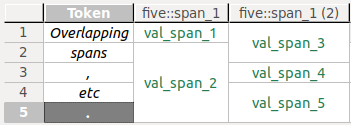

Grid Editor
The grid editor is used for annotating tokens and spans. It displays a document's token and annotation data in a vertical grid, i.e., the textual source data runs from top to bottom. Navigation and editing is done by mouse and keyboard. An overview of keyboard shortcuts can be found in the section Keyboard shortcuts.
Tokens are the smallest countable units in a data source. Spans are units that span tokens. To learn more about how Hexatomic's data model - Salt - defines these units, please refer to the Salt documentation.
Data source selection
A corpus document may contain more than one data source (text, audio, video), and their corresponding annotations. The grid editor displays one of these data sources at a time.
On the upper hand side of the grid editor interface, there is a dropdown menu to select the data source which should be displayed. If a document contains only a single data source, it is automatically selected.
Rows, columns, and cells
Rows in the grid contain a single token, its annotations, and the annotations on spans that overlap this token. A token in this case is the section of the data source the token covers. Depending on the type of data source and the resolution of the tokenization, this may be a word, a morpheme, a phoneme, a section of an audio or video source, etc.
Columns in the grid contain all values of a single qualified annotation in this document, that is, a unique combination of namespace and name of an annotation.
Additionally, the tokens in a document - or rather, the segment of the document text they represent - are displayed in separate columns preceding any annotation columns.
Note that overlapping spans which are annotated with the same qualified annotation cannot be visualized within the same column. Instead, the annotation values are spread over more than one adjacent columns, whose headers are then suffixed with the count of existing columns for that qualified annotation.
Example
One span (S1) covers the first token in a data source, another one (S2) covers the first and second token. Both spans are annotated with values for an annotationfive::span_1. Obviously, the overlap of both spans (both include the first token) cannot be visualized in a single column. Instead, S1's annotation valueval_span_1will be displayed in one column with the header five::span_1, S2's annotation valueval_span_3in another column with the header five::span_1 (2).
Columns are not part of Hexatomic's internal data model Salt. Therefore, they are not saved in the project when you save your changes. While columns may be empty with no values in their cells, e.g., after their initial creation or the deletion of all cells, they will be deleted as soon as the editor is closed, or another editor is opened on another document.
Merged cells represent annotations on spans that cover more than one token. You can see this in the last grid column in the screenshot above.
To distinguish between the different types of content diplayed in the grid cells, they are styled differently:
- Token text is displayed in italics.
- Token annotations are displayed in a black font.
- Span annotations are displayed in a green font.
Navigation and selection
The grid can be scrolled with the mouse using the scrollbars. If you have a mouse wheel, it will scroll horizontally. If you press Shift while using the mouse wheel, the grid will scroll vertically.
Alternatively, you can navigate the grid by selecting a cell and using the arrow keys to navigate. Pressing Home will jump to the first column, End will jump to the last column. PageUp and PageDown will jump a page up or down, a page being approximately the number of rows that fit the screen.
You can select whole rows or columns by clicking on the respective header. When you select a cell, press and hold Shift and click on another cell, the region between these two cells will be selected. This also works for headers, where all rows or columns between the two selected header cells will be selected.
Selecting non-adjacent cells, rows, or columns works by pressing and holding Ctrl while clicking the items to select.
Text search
You can search the grid using free text or regular expressions, with a number of options, e.g., search in columns first.
To bring up the search window, press Ctrl + F.

Display options
Freezing grid sections
You can freeze a section of the grid, so that it it remains visible while you scroll. This comes in handy for example when you have a large grid and want to keep the token column visible at all times.
To freeze a specific section, select the last cell, row or column that should remain visible, and press Shift + Alt + F. To unfreeze the grid, press Shift + Alt + F again.
Column and row freezing is also available from a popup menu in row and column headers, where you can (re-) set the row or column freeze, or toggle the general freeze state. The popup menu is opened by right-clicking the row or column header.
Hiding columns
You can hide columns by selecting one or more columns, and clicking Hide column(s) in the popup menu, available on right-click in any of the selected column headers. To show columns again, click the option Show all columns in the same popup menu.
Auto-resizing rows and columns
You can auto-resize rows columns, so that the row is high/column is wide enough to show all cell contents and the header content completely. To do so, simply select one or more rows or columns and click Auto-resize row(s) or Auto-resize column(s) in the popup menu, available on right-click in any of the selected headers.
Moving columns
You can move columns to another position in the grid by clicking on and holding the header of a column, and dragging it to its new position.
Manual refresh
You can manually refresh the grid, which will rebuild it from scratch. In the process, any empty columns will be removed, and column order may be affected. To refresh the grid manually, press F5 or right-click on the grid, and click the option Refresh grid in the popup menu.
Export to Excel
If, for whatever reason, you want to export the grid to a file in the Excel .xls format, you can do so.
Press Ctrl + E. This brings up a dialog for saving the file.
Note that exporting to an Excel spreadsheet will lose the actual data model. Only the string values of annotations, the headers, and the token texts will be exported. Additionally, merged cells will be separated.
Keyboard shortcuts
Navigation
| Shortcut | What the shortcut does | Constraints |
|---|---|---|
| Shift + mouse wheel | Scrolls through the grid vertically | |
| ←, →, ↑, ↓ | Move through the grid selecting individual cells | A cell must be selected |
| Home | Jump to the first column | A cell must be selected |
| End | Jump to the last column | A cell must be selected |
| PageUp, PageDown | Jump a page up or down | A cell must be selected |
Selection
| Shortcut | What the shortcut does | Constraints |
|---|---|---|
| Shift + click | Select the range of cells from the currently selected one to the clicked cell | A cell must be selected |
| Ctrl + click | Add/remove the clicked cell to the current selection of cells | A cell must be selected |
| Ctrl + F | Open text search | The editor window must be active |
| Shift + Alt + F | Toggle freezing of rows and columns | A cell, column, or row must be selected |
Data operations
| Shortcut | What the shortcut does | Constraints |
|---|---|---|
| Space | Activate cell for editing | Cell(s) must be selected |
| Enter | Commit edited annotation value | A cell must be in editing mode |
| Shift + Alt + S | Create a new column for span annotations | The editor window must be active |
| Shift + Alt + T | Create a new column for token annotations | The editor window must be active |
| Alt + S | Create a new span | >1 cells in a span column must be selected |
| Del | Delete selected cells | Cell(s) must be selected |
| F5 | Refresh editor from data model | Cell(s) must be selected |
| Ctrl + E | Export to Excel format | The editor window must be active |